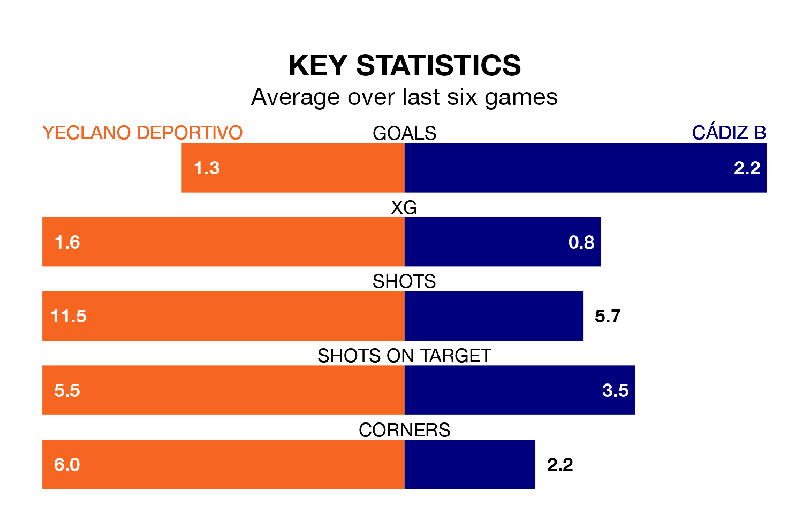

Sunday's match between Yeclano Deportivo and Cádiz B promises to be one for the neutrals, as two of Segunda División RFEF Group 4's most free-scoring sides go head-to-head.
Ahead of the game at the Estadio Municipal La Constitución, Yeclano Deportivo and Cádiz B sit third and joint-fourth in the goal-scoring charts, with 24 and 22 goals respectively.
Yeclano Deportivo are second in the table after 18 games, of which they have won 11 and drawn four, earning 37 points.
Cádiz B are eight places behind the hosts in 10th, with six wins and six draws putting them on 24 points.
Yeclano Deportivo are in fantastic form in Segunda División RFEF Group 4, with five wins and a draw from their last six games.
With three wins and three draws over that period, the away side's form is worse – they have taken 12 points from 18, compared to Yeclano Deportivo's 16.
In the last five years, Yeclano Deportivo and Cádiz B have played each other on five occasions. They won two each, and they drew once.
On average, Yeclano Deportivo scored 1.6 goals and Cádiz B 1.8 in those matches.
Their last meeting was on September 10, when Cádiz B won 3-1 at home.
Yeclano Deportivo's last match was on January 14, a 2-0 win against Union Estepona CF.
Cádiz B drew 1-1 with Real Betis B last time out, on January 13.
Updated: 06:13 (UTC), 18/01/24